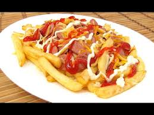

Salchipapa Recipe

Definition
In this recipe you will learn how to make salchipapas.
Ingredients
- Sausages
- Potatoes
- Oil
- Salt
- Mustard
- Tomato sauce
- Mayonnaise
Steps
- Peel the potatoes, wash them and cut them into sticks.
- Cut the sausages, either into slices or diagonally.
- In a pan, add oil and heat it over medium heat.
- Add the potatoes.
- After 15 minutes, turn up the heat and cook for 5 more minutes.
- After 20 minutes of cooking, add the chopped sausages.
- Continue cooking for 5 more minutes.
- Remove the potatoes and sausages from the pan and leave them on a tray with absorbent paper.
- Add salt and pepper to taste.
- Once the excess oil has been removed, we proceed to plate, putting the french fries as a base and the sausages on top of them.
- Add the sauces to our liking.
Home